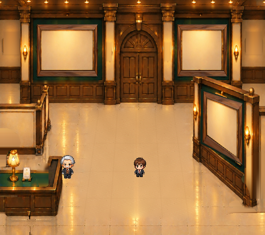
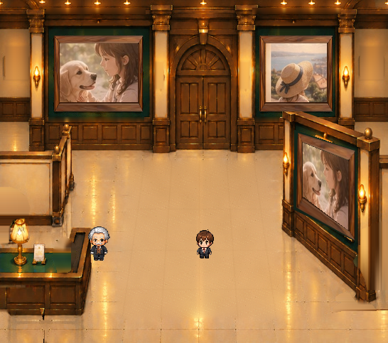
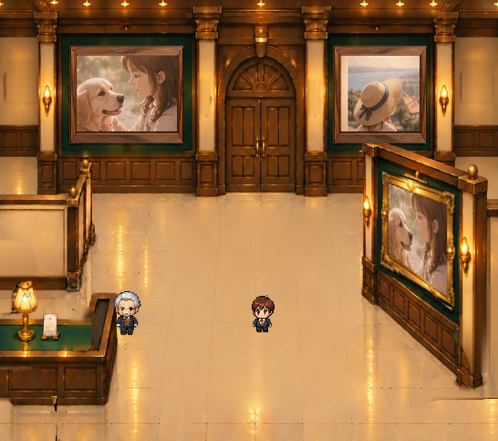

右手前の展示枠を、すべて同じ座標で統一しました
木製・金色・額縁なしの切替だけでなく、写真と空き台紙も同じ正面素材と写真窓から変形しています。

木製／空き台紙／100%
写真窓は全状態で共通です


正面向きの既存左額縁を元に、右手前の一組の外周・写真窓座標へ統一投影。木製／金色の表示形状と写真差し込み窓が一致します。逆向きへの変形技術例も保存済みです。元の豪華な右手前金額縁と装飾配置は異なるため、これを正式に置き換えるかは美術監修で判断します。ゲーム本体・登録写真の保存処理は変更していません。